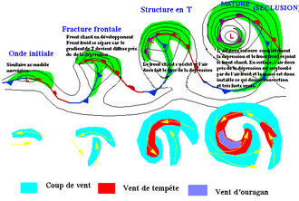
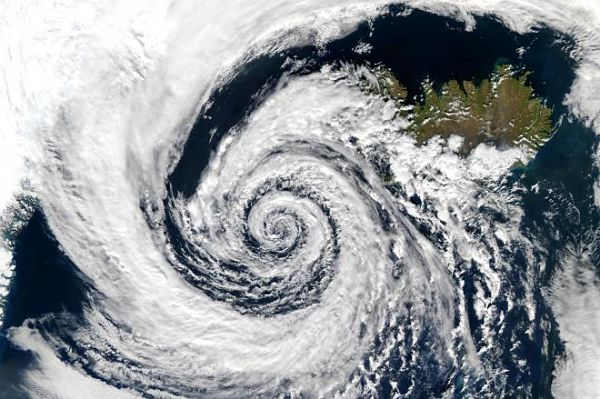
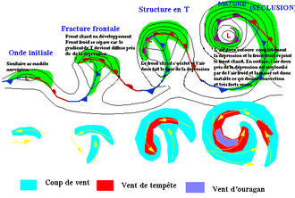
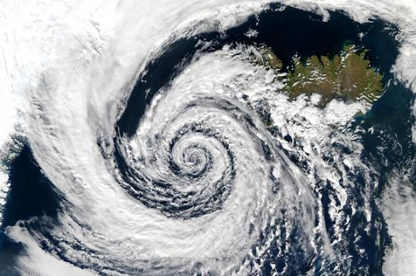

LES FRONTS
Interpretation des types de Fronts:
Un front météorologique est une surface de discontinuité étendue, qui sépare deux masses d’air ayant des propriétés physiques différentes (ex : température, humidité, pression). Le concept a été développé au début du xxe siècle par les météorologues norvégiens pour expliquer le comportement de l'atmosphère dans les latitudes moyennes terrestres : la formation des nuages, des précipitations, des dépressions et des anticyclones ainsi que leur déplacement. Le développement de la météorologie depuis cette époque a permis de démontrer que les fronts sont une conséquence des forces en jeu plutôt que leur cause mais la représentation est maintenant tellement répandue qu'ils sont toujours largement utilisés dans les présentations météo. Cela représente la frontière pour les différents types de fronts:
FRONT FROID:

Dans ce cas de figure, il peut y avoir des pluies torrentielles et des vitesses de vent élevées. Les lignes bleues avec des triangles sur un côté représentent les fronts froids sur les cartes météo. La direction pointée par les triangles est la direction dans laquelle le front froid se déplace. Dans le cas d'un front froid, il peut y avoir des pluies torrentielles et des vitesses de vent élevées. Ils sont représentés par des lignes bleues avec des triangles sur un côté. La direction pointée par les triangles est la direction dans laquelle le front froid se déplace.
FRONT CHAUD:
Ce type de front génère souvent une augmentation progressive des précipitations lorsqu'il approche, suivie d'une amélioration et d'un réchauffement rapide après son passage. Si la masse d'air chaud est instable, le temps peut être caractérisé par des orages prolongés. Une ligne rouge avec des demi-cercles sur un côté représente des fronts chauds. Le côté où se trouvent les demi-cercles représente la direction prise par le front chaud. Les fronts chauds, ce type de front génère souvent une augmentation progressive des précipitations lorsqu'il approche, suivie d'une amélioration et d'un réchauffement rapide après son passage. Une ligne rouge avec des demi-cercles sur un côté représente des fronts chauds. Le côté où se trouvent les demi-cercles représente la direction prise par le front chaud.

FRONT OCCLUS:

Ce type de front se forme lorsqu'un front froid dépasse un front chaud. Il est associé à divers évènements météorologiques (possibilité d'orages) selon qu'il s'agit d'une occlusion chaude ou froide. Le passage d'un front occlus amène souvent de l'air plus sec (avec un point de rosée plus bas). Une ligne violette avec des demi-cercles et des triangles du même côté représente un front occlus. Le côté où ces motifs se trouvent indique la direction prise par le front occlus.
FRONT STATIONNAIRE:
Il s'agit d'une frontière immobile entre deux masses d'air différentes. Ce front est caractérisé par une longue période de précipitations qui s'attarde longtemps dans une région et se déplace en vagues. Des demi-cercles d'un côté et des triangles de l'autre côté représentent un front stationnaire.

 


